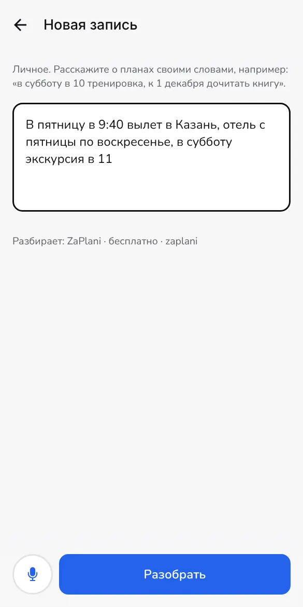
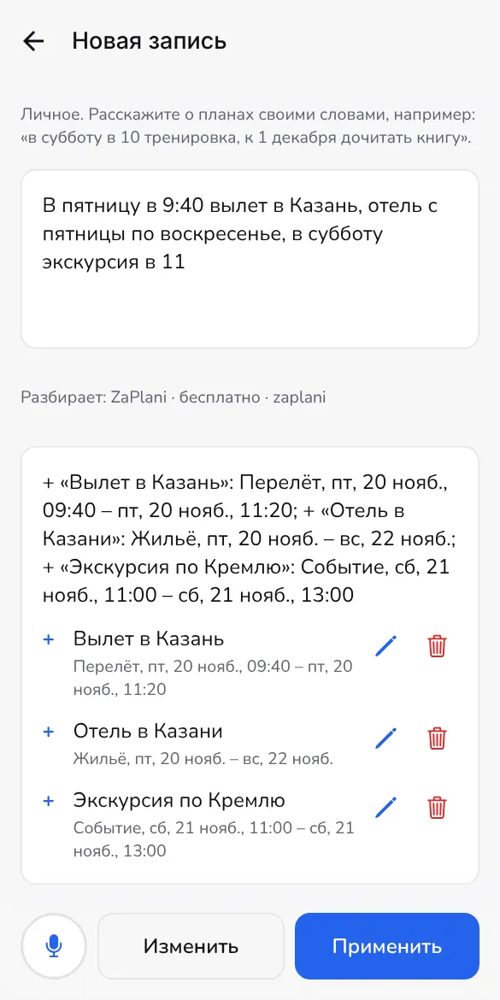
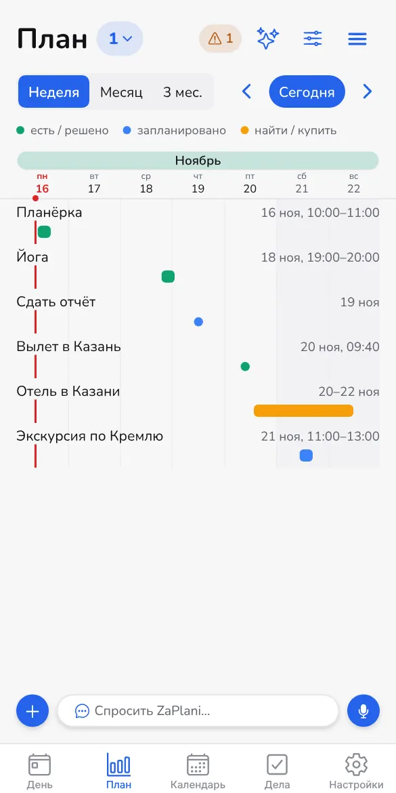

1
Вся поездка одной фразой
«В пятницу в 9:40 вылет в Казань, отель с пятницы по воскресенье, в субботу экскурсия в 11»
- ZaPlani разберёт рейс, отель и экскурсию и покажет всё до того, как добавить
- Отель без брони отметит «найти / купить», чтобы не забыть
- На плане поездка видна целиком, рядом с остальными делами недели


